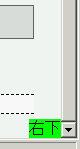
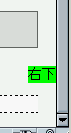

2003-11-23修正。内容を整理。
初期コンテナブロックのサイズは内容物の量に関わらず、閲覧領域のサイズと同じになっている。このため、幅や高さを明示していない初期コンテナブロックに対して絶対配置する要素は、閲覧領域に対して配置されてしまう。
<div style="position:absolute; bottom:0; right:0; background:lime;"> 右下</div>
このdiv要素は、文書全体の右下部に配置されるはずです。
Opera7.22標準モード
Netscape7.1標準モード
widthプロパティやheightプロパティを具体的な値で明示した場合は、それらの指定値から算出されたサイズのボックスに対して配置されるようになります。ただし、heightプロパティの%値指定は閲覧領域のサイズに対する割合を表します。内容物の量から導き出される高さに対する割合ではありません。
Netscape7.1で不具合の発生を確認しました。